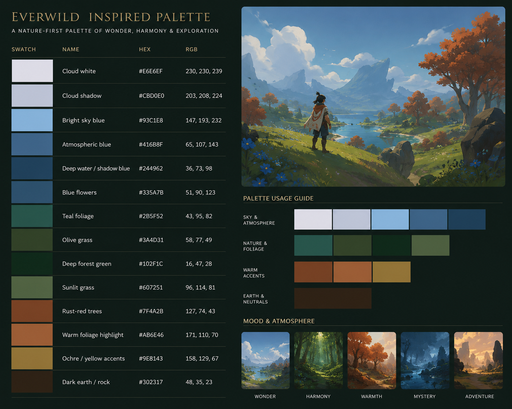

Simple spells.
Deep builds.
Depth emerges through combinations, talents, conditions, party composition, and player decisions.
A living design reference
A cooperative tactical action roguelike built around communication, meaningful builds, and dangerous shared adventures.

Depth emerges through combinations, talents, conditions, party composition, and player decisions.
Clear roles create a readable foundation for more demanding encounter composition and cooperation.
Positioning, support, threat, and coordinated decisions are the path to a hard-won victory.
The source of truth
Part I · Foundation
Dream Dungeon is a cooperative tactical action roguelike where a party fights through escalating encounters and builds distinctive characters from drafted spells, items, and talents.
It is designed as a long, high-stakes adventure—potentially played over more than one session. The route is the goal: a lost run should sting because a character mattered, while still making the next shared build feel exciting.
Part II · Gameplay
The MVP removes exploration to test the core loop in a single arena with a preparation hub. Bosses arrive after encounters 5, 10, 15, and 20. Shared experience drives party level-ups and spell drafts, while gold, relics, items, and spells each support a distinct kind of growth.
Combat should be responsive, chunky, direct, readable, reactive, and tactical. It favors clear telegraphs and satisfying feedback over spectacle or realism, with WASD movement, a hotbar, a global cooldown for most spells, automatic attacks, animation cancelling, and meaningful crowd control.
Spells define actions, items make those actions stronger, and talents create connections between systems. Health and mana form the universal base; threat enables tanking, momentum gives many offense builds an active rhythm, and weakened opens condition-based crowd-control opportunities.
Part III · Player Systems
Players are not locked into classes. Spell drafting establishes the active toolkit, colors organize magical identity, conditions create interactions, talents produce synergies, and items provide power growth that can be traded for party success.
Part IV · World Systems
Enemy, encounter, boss, and level design work together to make communication valuable. Individual enemies should be easy to read; encounter composition, objectives, positioning, and escalating boss mechanics deliver the deeper challenge.
Part V · World
The Dungeon is an ancient, mysterious place shaped by the Five Old Gods before their defeat by the New God. Lore should be discovered through exploration, environmental storytelling, optional interactions, enemies, relics, and world details—not long interruptions to play.
Each god provides a thematic anchor for color schools, biomes, creatures, altars, relics, and talents. Their identities remain intentionally flexible in the MVP while gameplay earns its foundation.
Part VI · Development
The MVP asks a single question: Is Dream Dungeon fun to play? It prioritizes responsive combat, group communication, meaningful spell drafting, and satisfying item growth before procedural generation, branching paths, advanced item systems, and complete story content.
Open questions are a deliberate tool: answers should come from prototyping and playtesting, then graduate into the relevant chapter once validated.
Spell reference
The spell library now has its own page, organized by color school. It begins with curated cards from the spell ideas sheet and can grow into the definitive spell reference.
Deal weapon damage plus bonus damage. Hitting from behind increases damage, builds momentum, and weakens the target.
Dissolve into mist, becoming untargetable. Units in the mist are attacked repeatedly based on consumed momentum.
All allies deal increased damage against units affected by at least one condition.
For a limited time, take increased damage but gain mana in response to damage received.
Red concepts are collected in the full spell sheet. Use this card as a place to add the first curated entry.
Blue concepts are collected in the full spell sheet. Add the first curated entry here as the school takes shape.
Supporting material
Key terms from the project glossary; expand these definitions directly as systems solidify.
Keep these files as the editable, detailed source; this site is the readable starting layer.